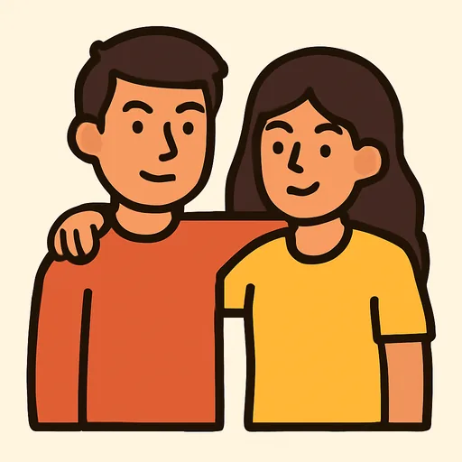

Semana 2 · Día 4 — Las preguntas básicas y la entonación
Неделя 2 · День 4 — Основные вопросы и интонация
Сегодня вы научитесь
- задавать пять главных вопросов: что, кто, где, как, откуда;
- правильно писать вопрос — с двумя знаками — и правильно его интонировать;
- составлять вопросы для интервью с новым человеком.
1. Разминка (0–3 мин)
- Карточки: 10 слов.
- Вопрос: «сколько тебе лет?» — по-испански, вслух, с правильной интонацией.
2. Фонетика (3–6 мин)
Интонация вопроса. Два типа:
- Вопрос «да / нет» — голос идёт вверх в конце: ¿Eres ruso? ↗ ¿Hablas español? ↗
- Вопрос с вопросительным словом — голос идёт вниз в конце, как в утверждении, а вопросительное слово выделяется: ¿De DÓNDE eres? ↘ ¿CÓMO te llamas? ↘
Прочитайте вслух, рукой показывая направление: ¿Eres de Madrid? ↗ · ¿De dónde eres? ↘ · ¿Tienes veinte años? ↗ · ¿Cuántos años tienes? ↘ · ¿Es profesora? ↗ · ¿Quién es? ↘
3. Новое (6–16 мин)
Пример
Иван показывает Лусии фото своей группы в Москве. [AUDIO]
| Español | Русский |
|---|---|
| — ¿Quién es? | — Кто это? |
| — Es Dima, un amigo. | — Это Дима, друг. |
| — ¿De dónde es? | — Откуда он? |
| — Es de Kazán. | — Из Казани. |
| — ¿Y qué es Kazán? ¿Una ciudad? | — А что такое Казань? Город? |
| — Sí, una ciudad grande. | — Да, большой город. |
| — ¿Dónde está? | — Где она (находится)? |
| — En Rusia, en el Volga. | — В России, на Волге. |
| — ¿Cómo se escribe «Kazán»? | — Как пишется «Казань»? |
| — Ka, a, zeta, a, ene. Con tilde en la a. | — Ка, а, сэта, а, энэ. С тильдой над a. |
Объяснение
Пять вопросительных слов — все с тильдой, всегда:
| Слово | Значение | Вопрос | Ответ |
|---|---|---|---|
| ¿Qué? | что? какой? | ¿Qué es esto? | Es un libro. |
| ¿Quién? | кто? | ¿Quién es? | Es Dima. |
| ¿Dónde? | где? | ¿Dónde está Kazán? | En Rusia. |
| ¿De dónde? | откуда? | ¿De dónde eres? | De Moscú. |
| ¿Cómo? | как? какой (по характеру / виду)? | ¿Cómo te llamas? ¿Cómo es Kazán? | Iván. Es grande. |
| ¿Cuántos / Cuántas? | сколько? | ¿Cuántos años tienes? | Veinte. |
Два знака. Вопрос начинается с ¿ и кончается ?. Восклицание — с ¡ и !. Это не украшение: вопросительное слово может стоять в середине фразы, и открывающий знак показывает, где начинается вопрос: Hola, ¿qué tal?
Está. В диалоге появилось ¿Dónde está? — «где находится?». Это другой глагол, estar, и он отвечает за место: Kazán está en Rusia. Ser отвечает за то, кто или что это: Kazán es una ciudad. Сегодня — только одна форма, está, как слово. Про ser / estar будет целая неделя.
Полезные вопросы ученика:
¿Cómo se escribe? — Как пишется? ¿Cómo se dice «спасибо» en español? — Как сказать «спасибо» по-испански? ¿Qué significa «amigo»? — Что значит «amigo»?
⚠️ Контраст с русским
- В русском вопрос «да / нет» делается одной интонацией — порядок слов тот же, что в утверждении: «Ты русский?» ↗. И так же в испанском: ¿Eres ruso? — порядок не меняется, только интонация. Это помогает.
- Но на письме испанский требует два знака, и вопросительные слова всегда с тильдой (qué, quién, dónde, cómo, cuántos). Без тильды это другие слова: que — «что / который» внутри фразы, como — «как / ем».
- Вы захотите: ✗ Como te llamas? ✗ Que es esto? → Правильно: ✅ ¿Cómo te llamas? ✅ ¿Qué es esto? В DELE отсутствие ¿ и тильды — это ошибки орфографии. Приучите руку сразу.
Ещё одно: ¿Cómo es? — «какой он?» (о характере, внешности), а не «как он?». «Как он (себя чувствует)?» — ¿Cómo está? — вот где разница ser / estar. Пока просто заметьте.
4. Практика (16–26 мин)
Упражнение А. Поставьте вопросительное слово. Банк:
qué · quién · dónde · de dónde · cómo · cuántos
- — ¿______ te llamas? — Marta.
- — ¿______ eres? — De Sevilla.
- — ¿______ es? — Es Pablo, un amigo.
- — ¿______ años tiene Pablo? — Veinticinco.
- — ¿______ está Sevilla? — En España, en el sur.
- — ¿______ es esto? — Es un café.
- — ¿______ es Sevilla? — Es bonita y grande.
- — ¿______ se escribe «Sevilla»? — Ese, e, uve, i, elle, a.
Упражнение Б. Напишите вопрос к ответу. Не забудьте ¿ ? и тильды.
Модель: — ______ — Me llamo Iván. → ¿Cómo te llamas?
- — ______ — Soy de Rusia.
- — ______ — Tengo veinte años.
- — ______ — Es mi profesora, Marta.
- — ______ — Está en Rusia.
- — ______ — Sí, soy ruso.
- — ______ — Es una ciudad.
Упражнение В. Исправьте ошибки. В каждой строке одна ошибка орфографии.
- Como te llamas?
- ¿De donde eres?
- ¿Quien es?
- Cuántos años tienes?
- ¿Que es esto?
5. Выход (26–29 мин)
Напишите восемь вопросов для интервью с новым человеком в группе: имя, откуда, город, национальность, возраст, языки, кто его друг на фото, как пишется его фамилия. Каждый — с ¿ и ? и с тильдой. Потом прочитайте их вслух с правильной интонацией: вопросы «да / нет» — вверх, остальные — вниз.
6. Итог (29–30 мин)
- [ ] Я знаю qué, quién, dónde, de dónde, cómo, cuántos — с тильдами.
- [ ] Я пишу ¿ в начале вопроса.
- [ ] Я интонирую вопрос «да / нет» вверх, а вопрос со словом — вниз.
- Добавьте слова дня в колоду.
Словарь дня
| Español | Русский | Пример |
|---|---|---|
| ¿qué? | что? какой? | ¿Qué es esto? |
| ¿quién? | кто? | ¿Quién es? |
| ¿dónde? | где? | ¿Dónde está Kazán? |
| ¿de dónde? | откуда? | ¿De dónde es Dima? |
| ¿cómo? | как? какой? | ¿Cómo es Kazán? — Grande. |
| está (en) | находится (в) | Kazán está en Rusia. |
 el amigo / la amiga |
друг / подруга | Dima es un amigo. |
| grande | большой, большая | una ciudad grande |
| ¿Qué significa …? | Что значит …? | ¿Qué significa «amigo»? |
| ¿Cómo se dice … en español? | Как сказать … по-испански? | ¿Cómo se dice «спасибо» en español? |
Ответы
А. 1. Cómo · 2. De dónde · 3. Quién · 4. Cuántos · 5. Dónde · 6. Qué · 7. Cómo · 8. Cómo.
Б. 1. ¿De dónde eres? · 2. ¿Cuántos años tienes? · 3. ¿Quién es? · 4. ¿Dónde está (Rusia / Kazán / Moscú)? · 5. ¿Eres ruso? · 6. ¿Qué es (Kazán)?
В. 1. ¿Cómo te llamas? (два исправления: знак и тильда — считайте за одну ошибку «вопрос без оформления») · 2. ¿De dónde eres? · 3. ¿Quién es? · 4. ¿Cuántos años tienes? · 5. ¿Qué es esto?